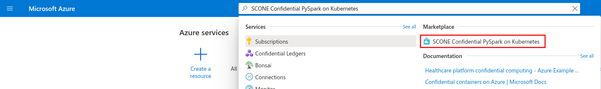
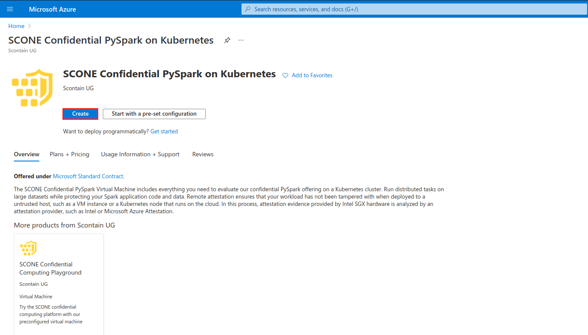
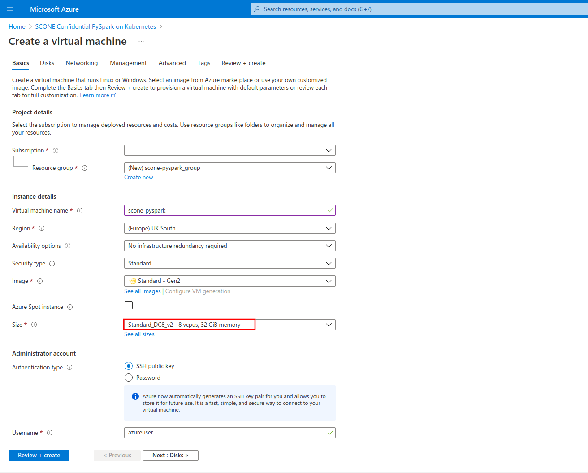
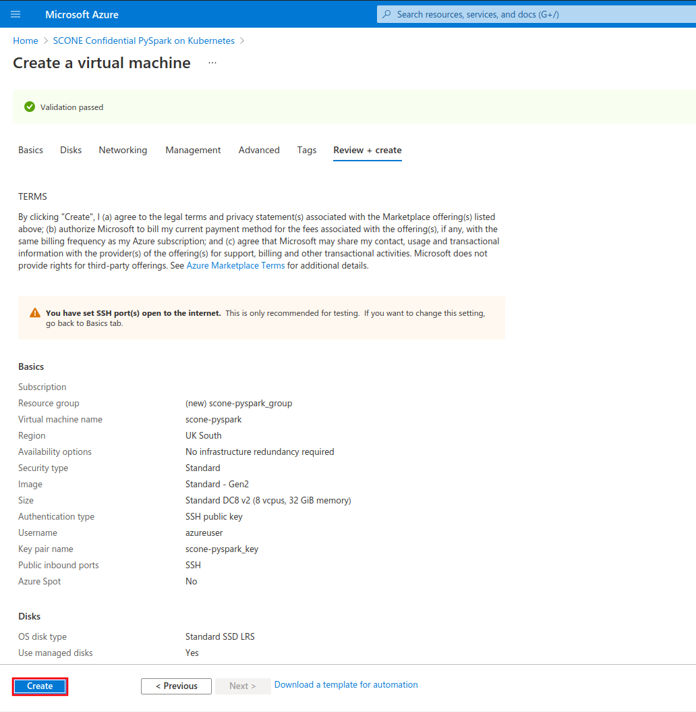
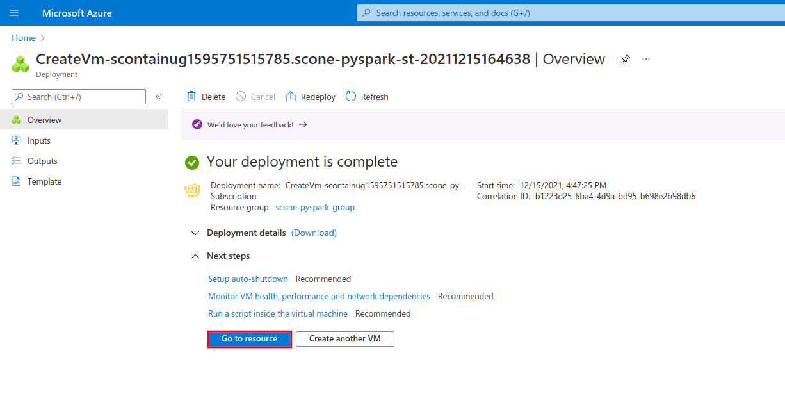
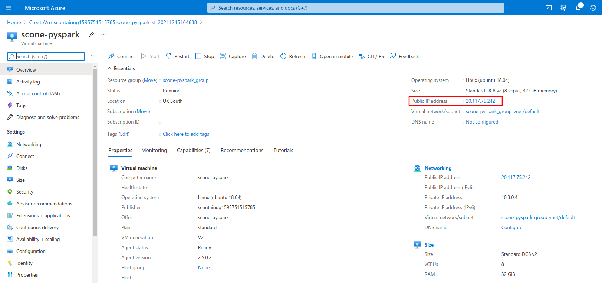

SCONE PySpark Virtual Machine
| Last updated | Virtual machine version |
|---|---|
| March 15th, 2022 | 5.7.0 |
The SCONE Confidential PySpark on Kubernetes Virtual Machine is one of the Azure Marketplace offers by Scontain. Its goal is to provide an easy starting point for evaluating the SCONE Confidential PySpark offering. It includes all the needed tools and images for running confidential PySpark applications in Kubernetes clusters whilst protecting the application code and data. The virtual machine includes:
docker,docker-compose,minikube,helm- base container images for confidential PySpark applications
- container images for our Attestation Services, as well as many of our curated images
- charts from our SconeApps Helm chart repository
The virtual machine also includes one sample application to process a large dataset (from Azure Blob Storage) on a Kubernetes cluster in a secure fashion, with full encrypted application code and data, as well as remote attestation policies.
 Important! This offer currently requires a node size of at least 32 GB of memory. We recommend using Standard_DC8s_v2, Standard_DC8s_v3 or Standard_DC8ds_v3 node sizes. Read more about DCsv2 and DCsv3 families on Azure.
Important! This offer currently requires a node size of at least 32 GB of memory. We recommend using Standard_DC8s_v2, Standard_DC8s_v3 or Standard_DC8ds_v3 node sizes. Read more about DCsv2 and DCsv3 families on Azure.
Quickstart
To get started, search for "SCONE Confidential PySpark on Kubernetes" in the Azure Portal search bar and select our offer under "Marketplace" section:

Click on "Create" button:

Configure your Virtual Machine according to your needs. Choose a size from families DCsv2-series (Coffee Lake processors), DCsv3-series or DCdsv3-series (Ice Lake processors) to have Intel SGX enabled on your Virtual Machine. This offer requires at least 32 GB of memory, so we recommend the sizes Standard_DC8s_v2, Standard_DC8s_v3 or Standard_DC8ds_v3. Setup user access through password or SSH keys.

Once you configured your VM, click on "Review + create" button and to review and validate your configuration. Click on "Create" once validation is finished.

After the deployment process is complete, click on "Go to resource" to see your newly-created VM.

Copy the IP address of your VM under the field "Public IP address".

You can use this IP to login to your VM through SSH, using the authentication method that you choose on the configuration step.
ssh azureuser@20.117.75.242
Once you're logged in to the Virtual Machine, you're good to go!
azureuser@scone-pyspark:~$ echo "Have fun! :-)"
Sample application
This offer includes a sample application to showcase how SCONE PySpark can be leveraged to run distributed confidential data processing applications over large datasets on a Kubernetes cluster. Horizontally scale your workloads while keeping your application code and data fully encrypted and remotely attested using hardware-based attestation evidences. To learn more about the sample application, check out its original GitHub repository.
Run yourself
TL;DR
cd /opt/scone/pyspark
# Configure execution through environment variables.
# REPO: container registry to host the generated Spark images. You must have push access to it!
export REPO=registry.scontain.com:5050/sconecuratedimages/experimental
export SPARK_IMAGE="$REPO:spark-scone-5.7.0"
# SCONE_CAS_ADDR and SCONE_CAS_MRENCLAVE: address and MrEnclave of the SCONE CAS.
# In this example we use a public CAS instance maintained by Scontain.
export SCONE_CAS_ADDR="5-7-0.scone-cas.cf"
export SCONE_CAS_MRENCLAVE="3061b9feb7fa67f3815336a085f629a13f04b0a1667c93b14ff35581dc8271e4"
# MAA_PROVIDER: address of a Microsoft Azure Attestation provider. If you want to enable MAA, please
# edit section "security.attestation" file "policies/pyspark.hw.yaml.template".
#export MAA_PROVIDER="https://sharedeus.eus.attest.azure.net"
# K8S_PULL_SECRET: configure Kubernetes to pull images from private repositories.
export K8S_PULL_SECRET="my-pull-secret"
# Build and push encrypted Spark image.
./build-spark-image.sh
source build/env.sh
docker push $SPARK_IMAGE
# Submit SCONE policies to the select SCONE CAS.
./create-policies.sh
# Start local minikube cluster.
./start-minikube-cluster.sh
# Deploy the application to the local minikube cluster.
./deploy-spark-application.sh
# You can check the progress of the execution through kubectl.
kubectl logs -l=spark-role=driver -f
Walkthrough
- Move to repository.
cd /opt/scone/pyspark
- We are building one image for the Spark driver and Spark executors. Specify the name of the image. You must have push access to the chosen repository!
export REPO=registry.scontain.com:5050/sconecuratedimages/experimental
export SPARK_IMAGE="$REPO:spark-scone-5.7.0"
- Build the Spark image.
./build-spark-image.sh
- Source the needed environment variables generated by the build script. The directory "build" is created by the build script and stores build resources for the encrypted Spark images (such as properties, SCONE policies and metadata).
source build/env.sh
- Push the image to the chosen registry.
docker push $SPARK_IMAGE
- Setup SCONE policies for remote attestation. First, export the SCONE CAS address and its MrEnclave. Exporting the MrEnclave of the CAS is needed to establish trust. In this example we use
5-7-0.scone-cas.cf, which is one of the public CAS instances maintained by Scontain.
export SCONE_CAS_ADDR="5-7-0.scone-cas.cf"
export SCONE_CAS_MRENCLAVE="3061b9feb7fa67f3815336a085f629a13f04b0a1667c93b14ff35581dc8271e4"
- You can also choose to delegate the attestation decisions to a Microsoft Azure Attestation provider. If this is the case, export the MAA provider URL. NOTE: You need to edit "security.attestation" section of "/opt/scone/pyspark/examples/count-nyc-taxi-yellow/count-nyc-taxi-yellow.template.yaml" to enable MAA.
export MAA_PROVIDER="https://sharedeus.eus.attest.azure.net"
- Generate the policies from the templates.
envsubst '$CAS_NAMESPACE' < namespace.template.yaml > build/policies/namespace.yaml
envsubst '$SCONE_CAS_ADDR $CAS_NAMESPACE $PYSPARK_SESSION_NAME $DRIVER_MAIN_FSPF_KEY $DRIVER_MAIN_FSPF_TAG $DRIVER_VOLUME_FSPF_KEY $DRIVER_VOLUME_FSPF_TAG $DRIVER_JAVA_MRENCLAVE $DRIVER_PYTHON_MRENCLAVE $EXECUTOR_JAVA_MRENCLAVE $MAA_PROVIDER $SPARK_HOME' < examples/count-nyc-taxi-yellow/count-nyc-taxi-yellow.template.yaml > build/policies/count-nyc-taxi-yellow.yaml
- Now we submit the policies to SCONE CAS using the SCONE CLI, which runs on a container.
# Attest SCONE CAS.
docker run --rm -t \
-e SCONE_CLI_CONFIG=/cas/config.json \
-v $PWD/build/cas:/cas \
--entrypoint bash \
$SPARK_IMAGE -c "scone cas attest $SCONE_CAS_ADDR $SCONE_CAS_MRENCLAVE -GCS --only_for_testing-debug --only_for_testing-ignore-signer"
# Create your CAS namespace from the template and submit it.
docker run --rm -t \
-e SCONE_CLI_CONFIG=/cas/config.json \
-v $PWD/build/cas:/cas \
-v $PWD/build/policies:/policies \
--entrypoint bash \
$SPARK_IMAGE -c "scone session create /policies/namespace.yaml"
# Create your SCONE policy for Spark drivers and executors from the template and submit it.
docker run --rm -t \
-e SCONE_CLI_CONFIG=/cas/config.json \
-v $PWD/build/cas:/cas \
-v $PWD/build/policies:/policies \
--entrypoint bash \
$SPARK_IMAGE -c "scone session create /policies/count-nyc-taxi-yellow.yaml"
- Export the SCONE_CONFIG_ID for the submitted policies.
export SCONE_CONFIG_ID="$CAS_NAMESPACE/$PYSPARK_SESSION_NAME-count-nyc-taxi-yellow/nyc-taxi-yellow"
- Generate the properties file for the Spark submission. You can edit the template to customize the execution (e.g., to change the amount of executors).
envsubst < properties.hw.template > build/properties
- If you have chosen a private registry to host your images, you need to create an ImagePullSecret in Kubernetes. Append the name of the created secret to the properties.
echo 'spark.kubernetes.container.image.pullSecrets regcred' >> build/properties
- Start the local minikube cluster. Setup the SCONE SGX device plugin and LAS.
minikube start --cpus 8 --memory 28G
# Install the SCONE SGX device plugin and SCONE LAS.
helm install sgxdevplugin /opt/scone/sconeapps/sgxdevplugin-1.2.0.tgz
helm install las /opt/scone/sconeapps/las-0.3.5.tgz --set image=registry.scontain.com:5050/sconecuratedimages/kubernetes:las.microsoft-azure-scone5.7.0
- Setup RBAC policies for Spark.
kubectl create -f kubernetes/rbac.yaml
- Gather the address of the minikube master.
MASTER_ADDRESS=$(kubectl config view --minify -o jsonpath='{.clusters[0].cluster.server}')
- Submit your application!
docker run -it --rm --network=host \
-v $HOME/.kube:/root/.kube \
-v $HOME/.minikube:$HOME/.minikube \
-v $(pwd)/build:/build \
godatadriven/pyspark:3.1 --master k8s://$MASTER_ADDRESS --deploy-mode cluster --name nyc-taxi-yellow --properties-file /build/properties local:///fspf/encrypted-files/count-nyc-taxi-yellow/count-nyc-taxi-yellow.py
The driver pod will run and coordinate the distributed execution of the task among the executor pods.
- Check the progress of the application execution by looking at the driver logs:
kubectl logs -l=spark-role=driver -f